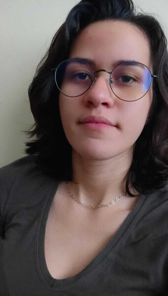

Olá! Sou a Karine Ennalian
Sou estudante de Sistemas de Informação, pela Universidade Federal do Ceará (UFC) - Campus Quixadá. Estou sempre em busca de melhorar meus conhecimentos de programação e lógica de programação.
Saiba Mais
